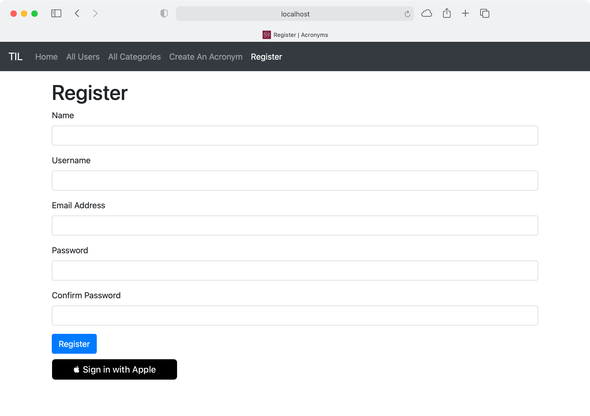
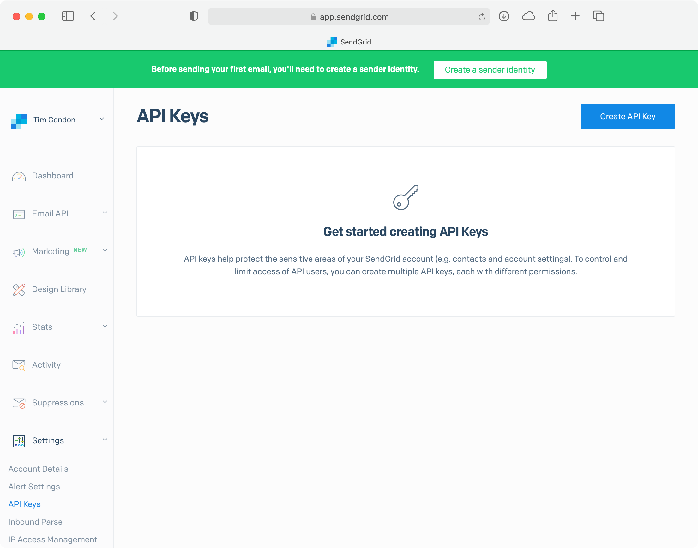
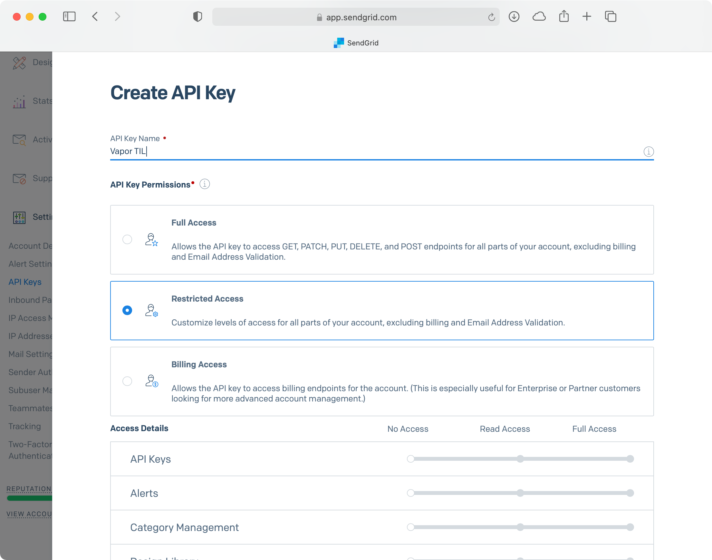
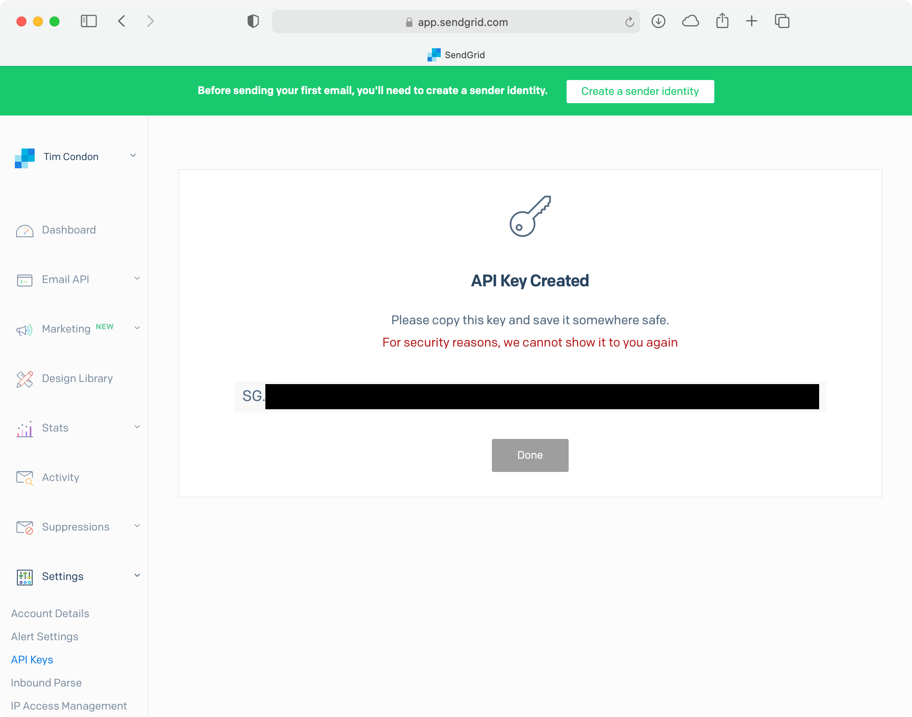
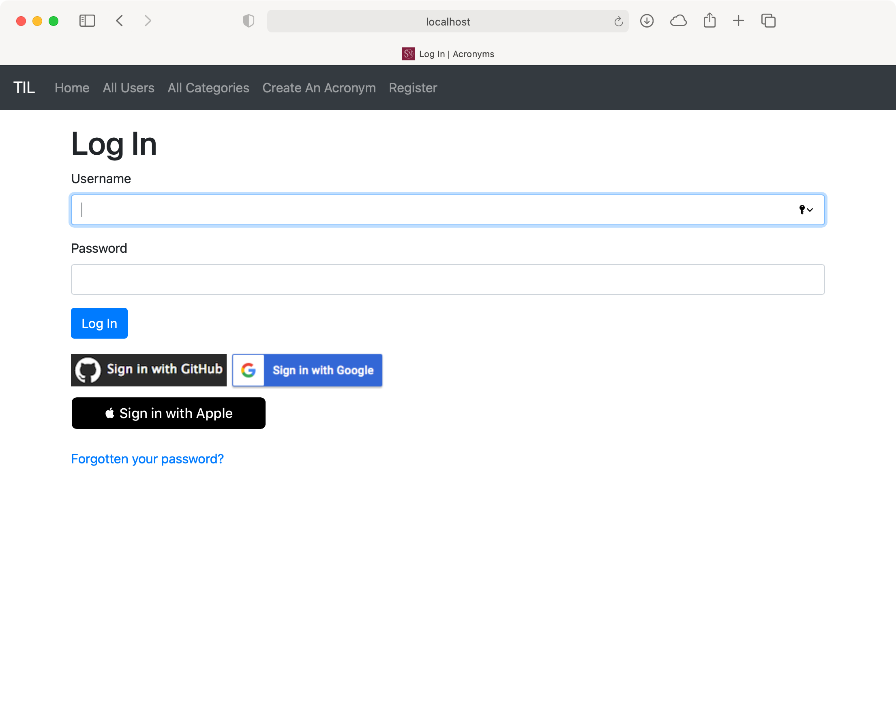
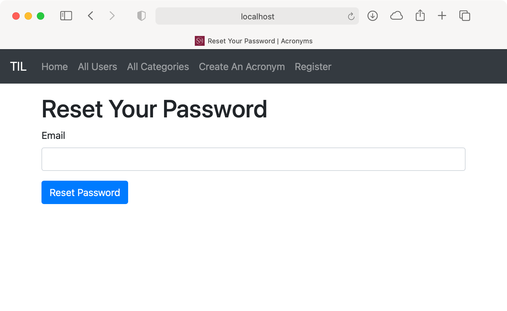
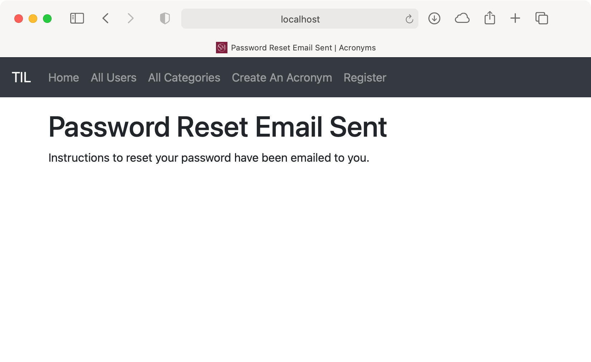
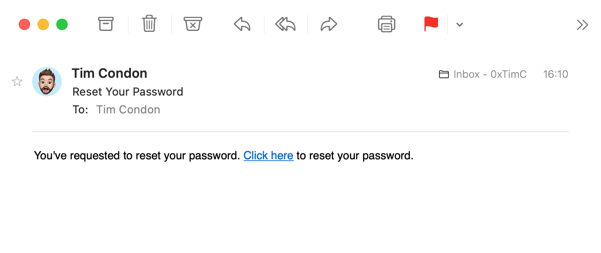
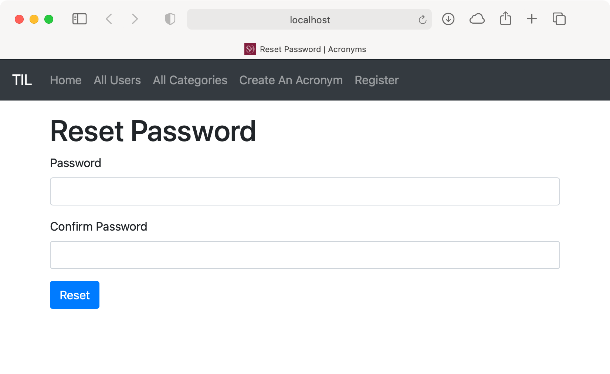

第25章。密码重置和电子邮件¶
在本章中，你将学习如何集成一个电子邮件服务来向用户发送电子邮件。发送电子邮件是许多应用程序和网站的一个共同要求。
你可能想为不同的警报向用户发送电子邮件通知，或者在用户第一次注册时发送入职邮件。对于TILApp，你将学习如何将电子邮件用于另一个常见功能：重设密码。首先，你将改变TIL的User，以包括一个电子邮件地址。你还会看到在使用OAuth认证时如何检索电子邮件地址。接下来，你将整合一个社区包，通过SendGrid发送电子邮件。最后，你将学习如何在网站中设置一个密码重置流程。
用户电子邮件地址¶
为了向用户发送电子邮件，你需要一种方法来存储他们的地址 在Xcode中，打开User.swift，在var siwaIdentifier: String?之后添加以下内容：
@Field(key: "email")
var email: String
这为User模型增加了一个新的属性，用来存储电子邮件地址。接下来，将初始化器替换为以下内容，以说明新的属性：
init(
id: UUID? = nil,
name: String,
username: String,
password: String,
siwaIdentifier: String? = nil,
email: String
) {
self.name = name
self.username = username
self.password = password
self.siwaIdentifier = siwaIdentifier
self.email = email
}
接下来，打开CreateUser.swift。在prepare(on:)中，在.field("siwaIdentifier", .string)下面添加以下内容：
.field("email", .string, .required)
.unique(on: "email")
这将该字段添加到数据库中，并在电子邮件字段上创建一个唯一键约束。在CreateAdminUser.swift中，将let user = User(..)替换为以下内容：
let user = User(
name: "Admin",
username: "admin",
password: passwordHash,
email: "admin@localhost.local")
这为默认的管理用户添加了一个电子邮件，因为现在创建用户时需要它。如果你愿意，可以提供一个已知的电子邮件地址。
Note
用户的公开表示没有改变，因为除非需要，通常不要暴露用户的电子邮件地址是个好主意。
网络注册¶
在TIL应用中创建用户的一种方法是通过网站注册。打开WebsiteController.swift，在RegisterData的底部添加以下属性：
let emailAddress: String
这是用户注册时提供的电子邮件地址。在符合RegisterData和Validatable的扩展中，添加以下内容：
validations.add("emailAddress", as: String.self, is: .email)
之后：
validations.add(
"zipCode",
as: String.self,
is: .zipCode,
required: false)
这可以确保注册时提供的电子邮件地址是有效的。在registerPostHandler(_:data:)中，将let user = ...替换为以下内容：
let user = User(
name: data.name,
username: data.username,
password: password,
email: data.emailAddress)
这使用用户在注册时提供的电子邮件来创建新的用户模型。打开register.leaf，在Username的form-group下添加以下内容：
<div class="form-group">
<label for="emailAddress">Email Address</label>
<input type="email" name="emailAddress" class="form-control"
id="emailAddress"/>
</div>
这将在注册表格中增加新的、必需的电子邮件字段。
社会媒体登录¶
在你可以构建应用程序之前，你必须修复编译错误。
修正Sign in with Apple使用的问题¶
为Sign in with Apple登录获取用户的电子邮件地址很简单；Apple在用于登录的JWT中提供了这个地址! 打开WebsiteController.swift，找到appleAuthRedirectHandler(_:)并将let user = ...改为以下内容：
let user = User(
name: "\(firstName) \(lastName)",
username: email,
password: UUID().uuidString,
siwaIdentifier: siwaToken.subject.value,
email: email)
接下来，打开UsersController.swift。在signInWithApple(_:)中，将let user = ...改为以下内容：
let user = User(
name: name,
username: email,
password: UUID().uuidString,
siwaIdentifier: siwaToken.subject.value,
email: email)
这两种方法都使用从JWT中获取的电子邮件，并将其传递给初始化器。这样就完成了用苹果登录。
修复谷歌¶
为Google登录获取用户的电子邮件地址也很简单；当你请求用户的信息时，Google会提供这个地址 打开ImperialController.swift，在processGoogleLogin(request:token:)中，将let user = ...改为以下内容：
let user = User(
name: userInfo.name,
username: userInfo.email,
password: UUID().uuidString,
email: userInfo.email)
这需要你在用户用谷歌登录时收到的用户信息，并将电子邮件地址添加到初始化器中。对于谷歌的登录，没有什么可做的了。
修复GitHub¶
获取GitHub用户的电子邮件地址就比较复杂了。GitHub并不把用户的电子邮件地址和用户的其他信息一起提供。你必须在第二个请求中获得电子邮件地址。
首先，在ImperialController.swift的boot(routes:)中，将try routes.oAuth(from: GitHub.self, ...)改为以下内容：
try routes.oAuth(
from: GitHub.self,
authenticate: "login-github",
callback: githubCallbackURL,
scope: ["user:email"],
completion: processGitHubLogin)
当请求访问一个用户的账户时，这将请求user:email范围。接下来，在GitHubUserInfo下面添加以下内容：
struct GitHubEmailInfo: Content {
let email: String
}
这代表了从GitHub的API请求用户的电子邮件时收到的数据。接下来，在GitHub扩展中的getUser(on:)下面添加以下内容：
// 1
static func getEmails(on request: Request) throws
-> EventLoopFuture<[GitHubEmailInfo]> {
// 2
var headers = HTTPHeaders()
try headers.add(
name: .authorization,
value: "token \(request.accessToken())")
headers.add(name: .userAgent, value: "vapor")
// 3
let githubUserAPIURL: URI =
"https://api.github.com/user/emails"
return request.client
.get(githubUserAPIURL, headers: headers)
.flatMapThrowing { response in
// 4
guard response.status == .ok else {
// 5
if response.status == .unauthorized {
throw Abort.redirect(to: "/login-github")
} else {
throw Abort(.internalServerError)
}
}
// 6
return try response.content
.decode([GitHubEmailInfo].self)
}
}
下面是这个的作用：
- 声明一个新的方法，从
GitHub获取用户的电子邮件。该方法返回[GitHubEmailInfo]，因为API会返回用户与该账户相关的所有电子邮件。 - 将承载授权令牌设置为用户的访问令牌。
- 向
GitHub API发出请求，以检索用户的电子邮件。解除返回的未来。 - 确保来自
API的响应是200 OK。 - 如果响应是
401 Unauthorized，重定向到GitHub登录OAuth流程。这假定令牌已经过期。否则，返回一个500 Internal Server Error。 - 将响应解码为
[GitHubUserInfo]。
最后，将processGitHubLogin(request:token)替换为以下内容：
func processGitHubLogin(request: Request, token: String) throws
-> EventLoopFuture<ResponseEncodable> {
// 1
return try GitHub.getUser(on: request)
.and(GitHub.getEmails(on: request))
.flatMap { userInfo, emailInfo in
return User.query(on: request.db)
.filter(\.$username == userInfo.login)
.first()
.flatMap { foundUser in
guard let existingUser = foundUser else {
// 2
let user = User(
name: userInfo.name,
username: userInfo.login,
password: UUID().uuidString,
email: emailInfo[0].email)
return user.save(on: request.db).flatMap {
request.session.authenticate(user)
return generateRedirect(on: request, for: user)
}
}
request.session.authenticate(existingUser)
return generateRedirect(
on: request,
for: existingUser)
}
}
}
以下是改变的内容：
- 在获取用户信息的同时，发送请求获取用户的电子邮件。
- 使用返回的电子邮件信息来创建一个新的
User对象。
修复测试¶
主目标现在可以编译了。然而，如果你尝试运行测试，你会看到由于User中新的email属性而导致的编译错误。打开Models+Testable.swift，在create(name:username:on:)中，将let user = ...改为以下内容：
let user = User(
name: name,
username: createUsername,
password: password,
email: "\(createUsername)@test.com")
这将创建一个新的用户，其电子邮件是基于用户名的，以避免任何冲突。由于电子邮件没有在API中暴露，你不需要用定义的电子邮件来测试响应。
接下来，打开Application+Testable.swift。在test(_:_:headers:body:loggedInRequest:loggedInUser:file:line:beforeRequest:afterRequest)中，用userToLogin = ...替换：
userToLogin = User(
name: "Admin",
username: "admin",
password: "password",
email: "admin@localhost.local")
这使用了来自CreateAdminUser的电子邮件来登录管理员用户。
接下来，打开UserTests.swift，在testUserCanBeSavedWithAPI()中，将let user = ...改为以下内容：
let user = User(
name: usersName,
username: usersUsername,
password: "password",
email: "\(usersUsername)@test.com")
这将创建具有所需电子邮件参数的用户，使用usersUsername来生成电子邮件地址。
确保你有你在过去三章中建立的.env文件，并且你在Xcode中设置了一个自定义工作目录。然后，运行测试，它们应该全部通过。
Note
你必须让Docker中的测试数据库运行，才能使测试发挥作用。参见第11章，"测试"，了解如何设置的细节。
运行应用程序¶
应用程序现在应该编译了。然而，在你运行应用程序之前，你必须由于新的电子邮件属性而重置数据库。在终端，键入：
docker rm -f postgres
docker run --name postgres \
-e POSTGRES_DB=vapor_database \
-e POSTGRES_USER=vapor_username \
-e POSTGRES_PASSWORD=vapor_password \
-p 5432:5432 -d postgres
这些是你在前几章中用来重置数据库的相同命令。
最后，建立并运行。在你的浏览器中，进入http://localhost:8080/，点击Register。现在的注册屏幕要求你提供一个电子邮件地址：

你也可以用你的谷歌或GitHub账户登录，没有任何问题。请注意，当你登录到GitHub账户时，GitHub会提示你允许应用程序对你的账户进行额外的访问。
这是因为你现在请求的是user:email范围：
iOS应用程序注册¶
增加了用户的电子邮件属性后，iOS应用就不能再创建用户了。在Xcode中打开iOS项目并打开CreateUserData.swift。在CreateUserData下面添加一个新属性var password: String?：
var email: String
在向API发送新用户时，这将存储用户的电子邮件。接下来，将初始化器替换为以下内容：
init(
name: String,
username: String,
password: String,
email: String
) {
self.name = name
self.username = username
self.password = password
self.email = email
}
这样就把email作为一个参数添加到初始化器中，并用提供的值初始化email。
接下来，打开Main.storyboard，找到Create User场景。选择Create User表视图，在属性检查器中，将部分的数量设置为4。在文档大纲中，选择新的表视图部分，并在属性检查器中把Header设为Email Address。
接下来，选择文档大纲中的新文本字段，将Placeholder改为用户的电子邮件。将Content Type和Keyboard Type改为Email Address，以便在用户选择该字段时显示电子邮件键盘。如果Secure Text Entry被选中，则取消该选项。
在助理编辑器中打开CreateUserTableViewController.swift。通过Control-dragging到CreateUserTableViewController，在@IBOutlet weak var passwordTextField: UITextField!下面为用户的电子邮件文本字段创建一个IBOutlet。将这个出口命名为emailTextField。
在save(_:)中，在上面添加以下内容let user = ...：
guard
let email = emailTextField.text,
!email.isEmpty
else {
ErrorPresenter
.showError(message: "You must specify an email", on: self)
return
}
这可以确保用户在尝试创建用户之前提供一个电子邮件地址。最后，将let user = ...替换为以下内容：
let user = CreateUserData(
name: name,
username: username,
password: password,
email: email)
这就为CreateUserData提供了一个来自你上面创建的文本字段的电子邮件地址。在另一个Xcode窗口中运行TILApp。然后，构建并运行iOS应用程序，用管理员的凭证登录。点击Users标签和+图标。填写表格，包括新的电子邮件字段，并点击Save。新用户将出现在用户列表中。
整合SendGrid¶
最后，你已经在用户模型中添加了一个电子邮件地址! 现在是学习如何发送电子邮件的时候了。本章使用SendGrid来实现这一目的。SendGrid是一个电子邮件发送服务，它提供了一个API，你可以用来发送电子邮件。它有一个免费层级，允许你每天免费发送100封电子邮件。还有一个社区包--https://github.com/vapor-community/sendgrid-provider，这使得它很容易集成到你的Vapor应用中。
虽然可以直接使用SwiftNIO发送电子邮件，但在大多数情况下，这并不可取。在消费者ISP上，发送电子邮件的端口经常被封锁，以打击垃圾邮件。如果你在AWS等地方托管你的应用程序，服务器的IP地址通常会被列入黑名单，这也是为了打击垃圾邮件。因此，使用一个服务来为你发送电子邮件通常是一个好主意。
添加依赖性¶
在TIL应用程序中，打开Package.swift并将.package(url: "https://github.com/vapor/jwt.git", from: "4.0.0"),改为以下内容：
.package(
url: "https://github.com/vapor/jwt.git",
from: "4.0.0"),
.package(
url: "https://github.com/vapor-community/sendgrid.git",
from: "4.0.0")
接下来，将该依赖关系添加到你的App目标的依赖关系数组中。将.product(name: "JWT", package: "jwt"),替换为：
.product(name: "JWT", package: "jwt"),
.product(name: "SendGrid", package: "sendgrid")
注册SendGrid并获得token¶
要使用SendGrid，你必须创建一个账户。请访问https://signup.sendgrid.com并填写表格进行注册：
一旦你进入仪表板，点击Settings来展开菜单，并点击API Keys：

点击Create API Key，并提供一个密钥的名称--例如，Vapor TIL。选择Restricted Access;

向下滚动并启用邮件发送权限。这使你的API密钥具有发送电子邮件的权限，但不能访问SendGrid API的其他部分。点击Create & View。SendGrid将显示你的API密钥：

就像OAuth客户端的秘密一样，你必须保持API密钥的安全和可靠，不要将密钥检查到源控制。你将无法再次检索到该密钥，所以确保你把它保存在某个地方!
最后，在发送电子邮件之前，你需要设置一个发件人身份。在仪表板的顶部，点击Create a sender identity。你可以选择两个不同的选项，但现在请点击Create a Single Sender：
填写表格创建一个发件人身份，然后点击Create。你会收到一封验证你的地址的邮件，所以当你收到邮件时，请点击Verify Single Sender。
与Vapor整合¶
创建了API密钥后，回到Xcode中的TIL应用程序。打开configure.swift，在import Leaf下面添加以下内容：
import SendGrid
接下来，在try routes(app)下面添加以下内容：
app.sendgrid.initialize()
这将初始化SendGrid服务并确保你已经正确配置了它。在一个文本编辑器中，打开.env，在文件的底部添加以下内容：
SENDGRID_API_KEY=<YOUR_API_KEY>
这将把你之前创建的API密钥添加到应用程序的环境变量中。SendGrid在与SendGrid API交互时，会查找SENDGRID_API_KEY。
你现在已经准备好用SendGrid发送电子邮件了!
设置一个密码重置流程¶
为了给你的应用程序的用户建立一个良好的体验，你必须为他们提供一种方法来重置遗忘的密码。你现在要实现这一点。
忘记密码的页面¶
密码重置流程的第一部分由两个动作组成。
- 向用户展示一个表单，要求用户提供注册的电子邮件地址。
- 处理表单所发送的
POST请求。
打开WebsiteController.swift，在buildSIWAContext(_:)下面，添加以下内容：
// 1
func forgottenPasswordHandler(_ req: Request)
-> EventLoopFuture<View> {
// 2
req.view.render(
"forgottenPassword",
["title": "Reset Your Password"])
}
下面是这个的作用：
- 定义一个路由处理程序，
forgottenPasswordHandler(_:)，返回EventLoopFuture<View>。 - 返回
forgottenPassword模板的渲染结果。这个模板只需要上下文中的一个属性，即标题。这个代码没有创建一个新的上下文类型来传递给模板，而是在一个字典中传递标题。这有助于减少你需要编写的代码量。
在boot(routes:)上面的authSessionsRoutes.get(use: indexHandler)注册路由：
authSessionsRoutes.get(
"forgottenPassword",
use: forgottenPasswordHandler)
这就把对/forgottenPassword的GET请求映射到forgottenPasswordHandler(_:)。在Resources/Views中，创建新的模板文件并命名为forgottenPassword.leaf。打开新文件，插入以下内容：
<!-- 1 -->
#extend("base"):
<!-- 2 -->
#export("content"):
<!-- 3 -->
<h1>#(title)</h1>
<!-- 4 -->
<form method="post">
<div class="form-group">
<label for="email">Email</label>
<!-- 5 -->
<input type="email" name="email" class="form-control"
id="email"/>
</div>
<!-- 6 -->
<button type="submit" class="btn btn-primary">
Reset Password
</button>
</form>
#endexport
#endextend
以下是新模板的作用：
- 就像你对其他模板一样，扩展基本模板。
- 导出基础模板所使用的
content属性。 - 使用通过上下文传入的参数显示页面的标题。
- 定义一个具有
POST方法的表单。当用户提交表单时，这将发送一个POST请求到同一个URL。 - 在表单中为电子邮件地址定义一个单一的输入。
- 设置一个提交按钮，标题为
Reset Password。
最后，打开login.leaf，在用苹果登录的脚本下面，添加以下内容：
<br />
<a href="/forgottenPassword">Forgotten your password?</a>
这就为新路线添加了一个链接，并在社交媒体登录按钮下面加了一个换行符，把链接放在社交媒体登录按钮下面。建立并运行该应用程序。在浏览器中转到http://localhost:8080/login。
你会看到忘记密码的新链接：

点击链接，查看新的忘记密码表格：

回到Xcode中，打开WebsiteController.swift。在forgottenPasswordHandler(_:)下面创建一个新的路由，以处理来自表单的POST请求：
// 1
func forgottenPasswordPostHandler(_ req: Request)
throws -> EventLoopFuture<View> {
// 2
let email =
try req.content.get(String.self, at: "email")
// 3
return User.query(on: req.db)
.filter(\.$email == email)
.first()
.flatMap { user in
// 4
req.view
.render("forgottenPasswordConfirmed")
}
}
下面是这个路由处理程序的工作：
- 为返回一个视图的
POST请求定义一个路由处理程序。 - 从请求的正文中获取电子邮件。因为只有一个你感兴趣的参数，你可以使用
get(_:at:)而不是创建一个新的Content类型。 - 通过创建一个带有过滤器的查询，从数据库中获取用户提供的电子邮件。由于电子邮件是唯一的，你要么得到一个结果，要么没有。
- 返回一个由新的
forgottenPasswordConfirmed模板渲染的视图。你希望无论电子邮件是否存在，都返回相同的响应，以避免向攻击者透露任何有用的信息。
通过在boot(routes:)中添加下面的authSessionsRoutes.get("forgottenPassword", use: forgottenPasswordHandler)来注册新路由：
authSessionsRoutes.post(
"forgottenPassword",
use: forgottenPasswordPostHandler)
这将一个POST请求映射到/forgottenPassword的forgottenPasswordPostHandler(_:)。
接下来，在Resources/Views中，创建新的模板文件。forgottenPasswordConfirmed.leaf。在编辑器中打开这个新文件，添加以下内容：
#extend("base"):
#export("content"):
<h1>#(title)</h1>
<p>Instructions to reset your password have
been emailed to you.</p>
#endexport
#endextend
和其他模板文件一样，这也是使用base.leaf的大部分内容。该页面显示一条信息，表明网站已经向用户发送了一封电子邮件。
为了保证密码重置请求的安全，你应该创建一个随机的令牌并将其发送给用户。在Sources/App/Models中创建一个名为ResetPasswordToken.swift的新文件并插入以下内容：
import Fluent
import Vapor
final class ResetPasswordToken: Model, Content {
static let schema = "resetPasswordTokens"
@ID
var id: UUID?
@Field(key: "token")
var token: String
@Parent(key: "userID")
var user: User
init() {}
init(id: UUID? = nil, token: String, userID: User.IDValue) {
self.id = id
self.token = token
self.$user.id = userID
}
}
下面是新模型代码的作用：
这定义了一个新的类，ResetPasswordToken，它包含一个UUID作为ID，一个String作为实际的令牌，以及用户的ID作为@Parent属性。
接下来，在Sources/App/Migrations创建一个新文件，名为CreateResetPasswordToken.swift，并添加以下内容：
import Fluent
struct CreateResetPasswordToken: Migration {
func prepare(on database: Database) -> EventLoopFuture<Void> {
database.schema("resetPasswordTokens")
.id()
.field("token", .string, .required)
.field(
"userID",
.uuid,
.required,
.references("users", "id"))
.unique(on: "token")
.create()
}
func revert(on database: Database) -> EventLoopFuture<Void> {
database.schema("resetPasswordTokens").delete()
}
}
这为ResetPasswordToken创建了迁移。它将userID链接到User的表中，并将token标记为唯一。
打开configure.swift，在app.migrations.add(CreateAdminUser())下面，添加以下内容：
app.migrations.add(CreateResetPasswordToken())
这将把新的模型添加到迁移列表中，这样应用程序在下次运行时就会创建该表。
发送邮件¶
返回到WebsiteController.swift。在文件的顶部，在import Fluent下面插入以下内容：
import SendGrid
然后，在forgottenPasswordPostHandler(_:)中，将req.view.render("forgottenPasswordConfirmed")改为以下内容：
// 1
guard let user = user else {
return req.view.render(
"forgottenPasswordConfirmed",
["title": "Password Reset Email Sent"])
}
// 2
let resetTokenString =
Data([UInt8].random(count: 32)).base32EncodedString()
// 3
let resetToken: ResetPasswordToken
do {
resetToken = try ResetPasswordToken(
token: resetTokenString,
userID: user.requireID())
} catch {
return req.eventLoop.future(error: error)
}
// 4
return resetToken.save(on: req.db).flatMap {
// 5
let emailContent = """
<p>You've requested to reset your password. <a
href="http://localhost:8080/resetPassword?\
token=\(resetTokenString)">
Click here</a> to reset your password.</p>
"""
// 6
let emailAddress = EmailAddress(
email: user.email,
name: user.name)
let fromEmail = EmailAddress(
email: "<SENDGRID SENDER EMAIL>",
name: "Vapor TIL")
// 7
let emailConfig = Personalization(
to: [emailAddress],
subject: "Reset Your Password")
// 8
let email = SendGridEmail(
personalizations: [emailConfig],
from: fromEmail,
content: [
["type": "text/html",
"value": emailContent]
])
// 9
let emailSend: EventLoopFuture<Void>
do {
emailSend =
try req.application
.sendgrid
.client
.send(email: email, on: req.eventLoop)
} catch {
return req.eventLoop.future(error: error)
}
return emailSend.flatMap {
// 10
return req.view.render(
"forgottenPasswordConfirmed",
["title": "Password Reset Email Sent"]
)
}
}
以下是新代码的作用：
- 确保有一个与电子邮件地址相关的用户。否则，返回渲染过的
forgottenPasswordConfirmed模板。注意标题是如何再次用字典设置的。 - 使用
CryptoRandom生成一个令牌字符串。注意这是用Base32编码的，以避免添加破坏URL的字符。 - 用令牌字符串和用户的
ID创建一个ResetPasswordToken对象。 - 将令牌保存在数据库中，并解开返回的未来。
- 创建电子邮件正文。这包含了一个使用令牌来重置密码的链接。如果需要的话，你甚至可以用
Leaf来生成一个完整的HTML电子邮件。 - 为收件人和发件人创建
EmailAddress实例。 - 创建一个
SendGrid的Personalization，以设置收件人和邮件的主题。 - 使用配置和电子邮件地址创建电子邮件。将内容类型设置为
text/html，以表明这是一封HTML电子邮件。SendGrid要求你提供type和value值。 - 使用
Application中的SendGridClient发送电子邮件，捕捉并返回任何错误，作为失败的future。 - 返回渲染好的
forgottenPasswordConfirmed模板。
将//8下的<SENDGRID SENDER EMAIL>替换为你在SendGrid验证过的电子邮件地址。
在文件的底部，为电子邮件中发送的新页面创建一个新的上下文：
struct ResetPasswordContext: Encodable {
let title = "Reset Password"
let error: Bool?
init(error: Bool? = false) {
self.error = error
}
}
这个上下文包含一个静态标题，并允许你设置一个错误标志。接下来，在forgottenPasswordPostHandler(_:)下，创建一个路由处理程序来处理邮件中的链接：
func resetPasswordHandler(_ req: Request)
-> EventLoopFuture<View> {
// 1
guard let token =
try? req.query.get(String.self, at: "token") else {
return req.view.render(
"resetPassword",
ResetPasswordContext(error: true)
)
}
// 2
return ResetPasswordToken.query(on: req.db)
.filter(\.$token == token)
.first()
// 3
.unwrap(or: Abort.redirect(to: "/"))
.flatMap { token in
// 4
token.$user.get(on: req.db).flatMap { user in
do {
try req.session.set("ResetPasswordUser", to: user)
} catch {
return req.eventLoop.future(error: error)
}
// 5
return token.delete(on: req.db)
}
}.flatMap {
// 6
req.view.render(
"resetPassword",
ResetPasswordContext()
)
}
}
以下是新路线的作用：
- 确保请求包含一个令牌作为查询参数。否则，渲染
resetPassword模板，并设置错误标志。 - 查询
ResetPasswordToken表，以找到所提供的令牌，并解包所产生的未来。 - 确保提供的令牌是有效的，否则重定向到主页。
- 获取令牌的用户并在会话中保存为
ResetPasswordUser。 - 删除该令牌，因为你现在已经使用了它。
- 渲染
resetPassword模板，使用默认的ResetPasswordContext并返回结果。
在boot(routes:)中，在authSessionsRoutes.post("forgottenPassword", use: forgottenPasswordPostHandler)下面，注册新的路由：
authSessionsRoutes.get(
"resetPassword",
use: resetPasswordHandler)
这将GET对/resetPassword的请求映射到resetPasswordHandler(_:)。
在Resources/Views中，创建一个名为resetPassword.leaf的文件。这是resetPasswordHandler(_:)使用的新模板。在编辑器中打开该文件，添加以下内容：
#extend("base"):
#export("content"):
<h1>#(title)</h1>
<!-- 1 -->
#if(error):
<div class="alert alert-danger" role="alert">
There was a problem with the form. Ensure you clicked on
the full link with the token and your passwords match.
</div>
#endif
<!-- 2 -->
<form method="post">
<!-- 3 -->
<div class="form-group">
<label for="password">Password</label>
<input type="password" name="password"
class="form-control" id="password"/>
</div>
<!-- 4 -->
<div class="form-group">
<label for="confirmPassword">Confirm Password</label>
<input type="password" name="confirmPassword"
class="form-control" id="confirmPassword"/>
</div>
<!-- 5 -->
<button type="submit" class="btn btn-primary">
Reset
</button>
</form>
#endexport
#endextend
这与其他模板类似，设置content并使用base.leaf。以下是不同之处：
- 如果
error被设置，显示错误信息。这个模板对密码不匹配和没有令牌使用相同的错误属性。 - 显示一个带有
POST动作的表单。这将表单提交回同一URL，/resetPassword，作为POST请求。 - 添加一个新密码的输入。
- 增加一个确认新密码的输入。
- 添加一个提交表单的按钮，标签为
Reset。
在WebsiteController.swift的底部，创建一个Content类型来解码表单的数据：
struct ResetPasswordData: Content {
let password: String
let confirmPassword: String
}
这个类型包含表单中每个输入的属性。下面resetPasswordHandler(_:)创建一个路由处理程序来处理表单中的POST请求：
func resetPasswordPostHandler(_ req: Request)
throws -> EventLoopFuture<Response> {
// 1
let data = try req.content.decode(ResetPasswordData.self)
// 2
guard data.password == data.confirmPassword else {
return req.view.render(
"resetPassword",
ResetPasswordContext(error: true))
.encodeResponse(for: req)
}
// 3
let resetPasswordUser = try req.session
.get("ResetPasswordUser", as: User.self)
req.session.data["ResetPasswordUser"] = nil
// 4
let newPassword = try Bcrypt.hash(data.password)
// 5
return try User.query(on: req.db)
.filter(\.$id == resetPasswordUser.requireID())
.set(\.$password, to: newPassword)
.update()
.transform(to: req.redirect(to: "/login"))
}
以下是新的路径处理程序的作用：
- 将请求主体解码为
ResetPasswordData。 - 确保密码匹配，否则将再次显示错误信息的表单。
- 获取保存在会话中的用户。你在上面的
GET路线中设置了这个用户。一旦取回，从会话中清除该用户。 - 哈希用户的新密码。
- 执行一个查询，将用户的密码更新为新的散列密码。这将为数据库中所有具有匹配
ID的用户设置password字段。由于ID是唯一的，它只更新一个用户。这类似于一个UPDATE的SQL查询。
最后，在authSessionsRoutes.get("resetPassword", use: resetPasswordHandler)下面的boot(routes:)中注册路由：
authSessionsRoutes.post(
"resetPassword",
use: resetPasswordPostHandler)
这将POST请求/resetPassword映射到resetPasswordPostHandler(_:data:)。建立并运行该应用程序。如果有必要，用你的电子邮件地址注册一个新用户，然后退出。在你的浏览器中进入http://localhost:8080/login，点击Forgotten your password?。输入你的用户的电子邮件地址，点击Reset Password。
你会看到确认屏幕：

在一分钟左右的时间内，你应该收到一封电子邮件。请注意，该邮件可能在你的垃圾邮件文件夹中，这取决于你的电子邮件供应商和客户端：

点击电子邮件中的链接。该应用程序为你提供了一个输入新密码的表格：

在两个字段中输入一个新的密码，然后点击Reset。该应用程序会将你重定向到登录页面。输入你的用户名和你的新密码，应用程序将登录。
接下来去哪？¶
在本章中，你学到了如何集成SendGrid来从你的应用程序中发送电子邮件。你可以通过使用Leaf来扩展它，以生成"美化"的HTML邮件，并在不同的场景下发送邮件，比如说在注册时。本章还介绍了一种重置用户密码的方法。对于一个真实世界的应用，你可能想改进这个方法，比如当密码被重置时，使所有现有的会话无效。
下一章将告诉你如何在Vapor中处理文件上传，让用户上传个人资料图片。